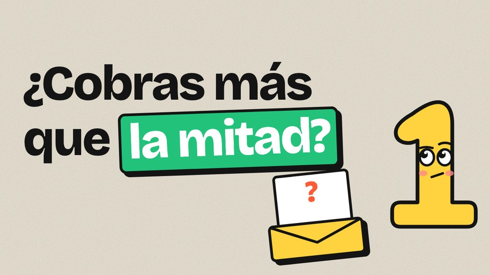
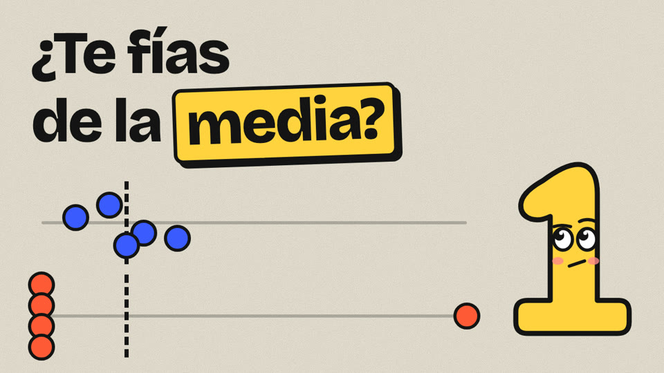

Episodios / Numerito en la Vida Real / Vida Real
Percentil del sueldo: ¿cobras más que la mayoría?

El vídeo se estrena en YouTube el 17 de noviembre. Mientras, ya puedes jugar con el simulador.El vídeo es de YouTube y solo se carga cuando pulsas play.
El episodio en 3 ideas
Juega con «La escalera del sueldo»
Pon un sueldo y mira en qué escalón de España cae. Sirve para ver qué cambia según cuentes 12 o 14 pagas, o el mes o el año. No se guarda nada de lo que escribes: todo se calcula en tu navegador.
Sueldo bruto anual · asalariados · INE, Encuesta Anual de Estructura Salarial 2024 · jornada completa y parcial juntas
La línea negra es una regla de euros al año, de 0 a 60.000 € o más. Cada escalón empieza en su cifra del INE: P10, P25, P50 (la mediana, en verde), P75 y P90. El sobre es tu sueldo.
La escalera es en BRUTO, antes de impuestos y cotizaciones: si pones tu neto (lo que te llega al banco), te colocará más abajo de donde estás.
Cuatro retos
Usa la caja, los botones y los interruptores de arriba. Cada reto se marca solo con un ✔ cuando lo consigues.
¡Cuatro de cuatro! La lección: la escalera es bruta y anual. Antes de colocarte, suma todas tus pagas.
Lo que la escalera no dice
Un percentil es una posición en la fila. No dice si un sueldo es bueno. No sabe:
- en qué ciudad vives ni cuánto te cuesta vivir;
- cuántas horas trabajas (la escalera mezcla jornada completa y parcial, y eso llena los escalones de abajo);
- en qué momento de tu carrera estás.
Además, solo cuenta asalariados (quedan fuera los autónomos, el campo y el empleo del hogar) y son sueldos de 2024, no de hoy.
Ver las cuentas
Los cinco escalones son oficiales (INE, Encuesta Anual de Estructura Salarial 2024, ganancia bruta anual por trabajador). Lo de entre escalones es una estimación propia: el INE publica un gráfico con el porcentaje de asalariados en cada tramo de 1.000 € (de 0 a 100.000 €). Sumamos los tramos que quedan enteros por debajo de tu sueldo y, del tramo donde cae, la parte proporcional (interpolación lineal). No es un dato oficial.
Con este método salen los cinco escalones oficiales (10, 25, 50, 75 y 90 de cada 100), así que es una buena aproximación. Por debajo del P10 y por encima del P90 no damos cifra: ahí solo decimos «menos de 10» o «más de 90», que es lo que dice el INE.
Datos: INE, Encuesta Anual de Estructura Salarial 2024 (percentiles de la ganancia bruta anual por trabajador, jornada completa y parcial juntas, y gráfico de la distribución por tramos de 1.000 €). Los sueldos entre escalones son una estimación propia, no un dato oficial. Esto es educativo, no asesoramiento.© 2026 Soy Numerito. Todos los derechos reservados: no se permite copiar ni reutilizar este simulador, sus textos ni sus diseños sin permiso por escrito.Abrir el simulador solo, a pantalla completa →

Siguiente episodio →Qué es la desviación típica: 2 autobuses, misma media